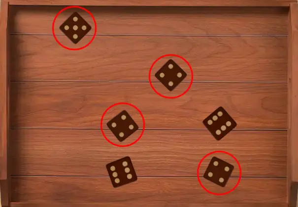

Welcome to Farkle🎲! The goal is to score 10,000 points as quickly as possible by rolling six dice and choosing scoring combinations. Be careful, though—if you roll and get no scoring dice, you "Farkle" and lose your points for that turn!
Game Setup
1. You and the computer take turns rolling the dice.
2. On your turn, roll all six dice by clicking "Roll Dice" .
3. The dice will appear on the screen and then you can select the dice by clicking on them.
Gameplay Rules
After rolling, check the dice for scoring combinations based on the chart below:
Melds
Scoring
1 x ⚀
100
1 x ⚄
50
3 x ⚀
1000
3 x ⚁
200
3 x ⚂
300
3 x ⚃
400
3 x ⚄
500
3 x ⚅
600
Three Pairs
1500
Straight (⚀ ⚁ ⚂ ⚃ ⚄ ⚅)
1500
Four of a kind
1000
Five of a Kind
2000
Six of a kind
3000
Choose Scoring Dice:
4. After rolling, identify which dice are part of a scoring combination.

5. For example the above image shows all the possible combination. Here, we have triple 4's for 400 and a single 5 for 50. So total for 450.
Bank or Roll Again:
6. After scoring, you have two options:
Bank Score : Click the "Bank Score" button to save your points for the turn and end your turn.
Roll Dice : Click the "Roll Dice" button to roll the remaining dice and try to score more points.
⚠ Be careful: If you roll and get no scoring dice, you Farkle and lose all points for that turn!
Turn Ends When :
7. Your turn ends when you either:
Bank your score.
Roll and get no scoring dice (Farkle).
Tips for Success
Be strategic! Bank your score when you feel the risk of Farkling is too high.
Look for combinations like Triples or Straights to maximize points.
Don't be too greedy—sometimes it's better to bank a small score than lose everything!